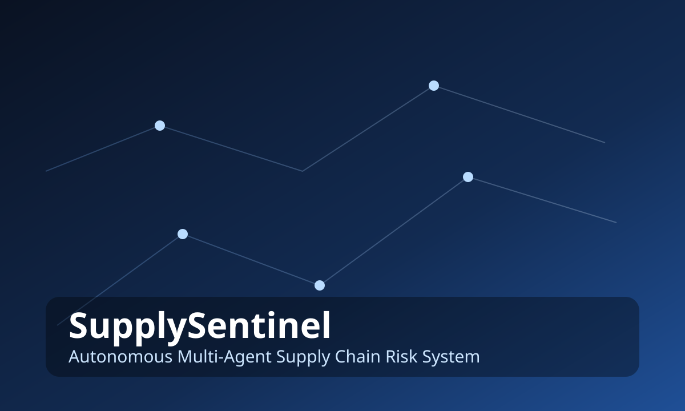
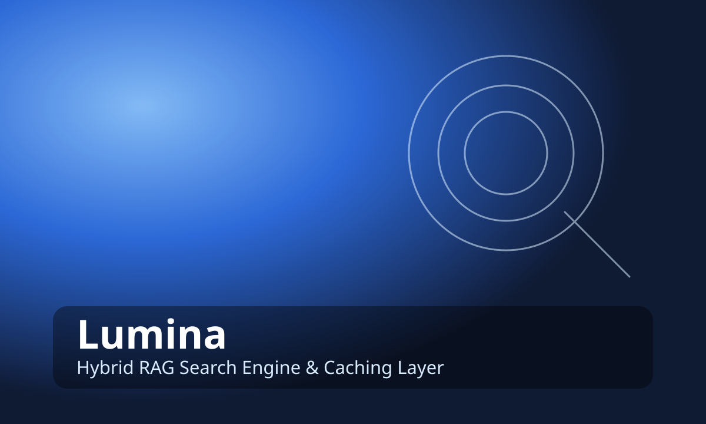
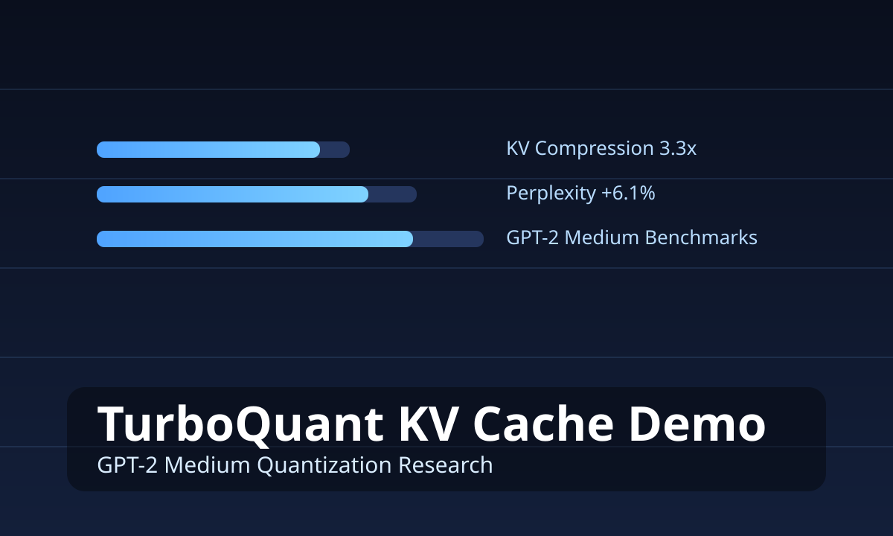
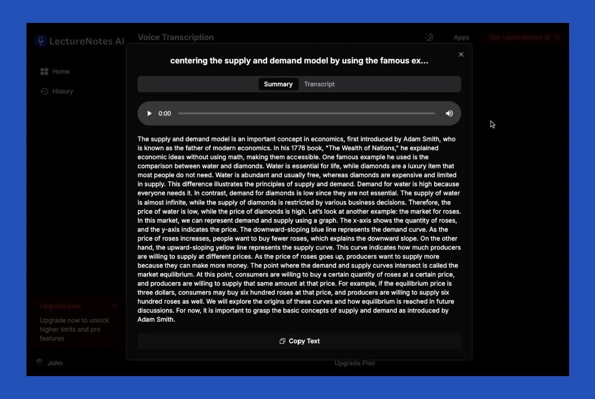

Hi, I'm Karthik Koundinya
I'm an
Transforming Complex Problems into Elegant AI Solutions

CodeChef 6★
#6 in India · #76 Global · 2483
LeetCode Guardian
2665 rating · Top 0.9% globally
Open Source Impact
21 PRs · 15 merged across 16 repositories
About Me
I'm G. Karthik Koundinya — an engineer who builds AI systems and software with production standards, not academic shortcuts. I work across AI, backend, and full-stack engineering, delivering systems that run fast, scale cleanly, and survive real-world usage without babysitting.
I build platforms that eliminate manual work: lecture-to-notes engines, UML generators that cut modeling time by 90%, sub-millisecond network classifiers, and cloud applications used daily across campus. Every project I ship is measured, optimized, and hardened — because "it works on my machine" isn't engineering.
I contribute directly to the ecosystems I depend on, with code in pandas, matplotlib, SQLFluff, Google ADK, pipx, mem0, and TheAlgorithms. My work closes edge cases, fixes real production issues, and improves reliability in tools used across the AI and data community.
My problem-solving discipline comes from competitive programming. I currently hold CodeChef 6★ (2483, #6 India, #76 global) and LeetCode Guardian (2665, top 0.9% globally), which reflects how I solve engineering problems with speed, rigor, and consistency under pressure.
I operate with ownership, urgency, and depth. In AI Engineering or SDE roles, I don't need hand-holding — I diagnose, design, build, and ship. Fast.
This is the standard I work at. This is the engineer you get.
Download CVEducation
B.Tech Computer Science Engineering
Geethanjali College of Engineering and Technology, Hyderabad
2023 – 2027 · CGPA: 8.6- Relevant coursework: Data Structures & Algorithms, Operating Systems, DBMS, Computer Networks, OOP, Discrete Mathematics, Software Engineering, Theory of Computation, Computer Architecture, Linear Algebra & Probability.
Aspire Leaders Program
Aspire Institute (founded at Harvard University)
2025- Curriculum included leadership identity, trust-building communication, digital transformation, organizational change, strengths-based leadership, and professional development modules co-developed with Harvard Business School faculty.
My Skills
Key Skills
Artificial Intelligence & Machine Learning
Data Structures, Algorithms & System Design
Full-Stack Web Development
Software Development & Version Control
Experiences
Full Stack Engineering Intern
Stealth Startup
Jan 2026 – Apr 2026- Owned full-stack delivery at a stealth startup and shipped a scalable social product on Next.js, Node.js, and Supabase from zero to production-ready architecture.
- Cut database round-trips by ~50% and improved latency by ~30% through query tuning, request-path refactoring, and payload minimization.
- Delivered realtime auth and activity flows with Supabase Realtime, established EC2 + PM2 + CI/CD release ops, and guided web-to-Flutter expansion.
AI & Frontend Development Intern
Edunet Foundation
Aug 2025 – Oct 2025- Built an AI lecture-to-notes pipeline combining Whisper transcription with transformer summarization and key-topic extraction.
- Reduced end-to-end processing time by ~80% using GPU-accelerated inference and cache-aware batching.
- Shipped a responsive React interface with one-click PDF and DOCX export for classroom-ready note packs.
Web Development & SEO Intern
Badakarobar
Mar 2025 - June 2025- Delivered and optimized responsive landing pages, lifting Lighthouse performance by ~45% while improving mobile usability.
- Implemented technical SEO and metadata frameworks that increased organic discoverability.
- Automated sitemap generation with Python tooling to remove recurring manual SEO operations.
Featured Projects

SupplySentinel
Built an autonomous 3-agent platform (Watchman, Analyst, Dispatcher) for 24/7 supply-chain risk monitoring with confidence-aware evidence loops and deduplicated alerts.


TurboQuant KV Cache Demo
Implemented TurboQuant-style KV-cache compression for GPT-2 Medium with Lloyd-Max quantization and QJL residual sketching, delivering 3.3x compression with controlled perplexity shift.

AI Network Traffic Classification & QoS Shaping
Built a real-time ML pipeline for encrypted traffic classification across five application classes (80–90% accuracy, sub-1ms inference) and automated policy-driven QoS shaping.

Lecture Voice-to-Notes Generator
Built a Streamlit-based AI pipeline that converts long lecture audio into structured notes, quizzes, and flashcards using Whisper ASR and transformer summarization.
Contact Me
karthikofficialmain@gmail.com
Location
Hyderabad, India